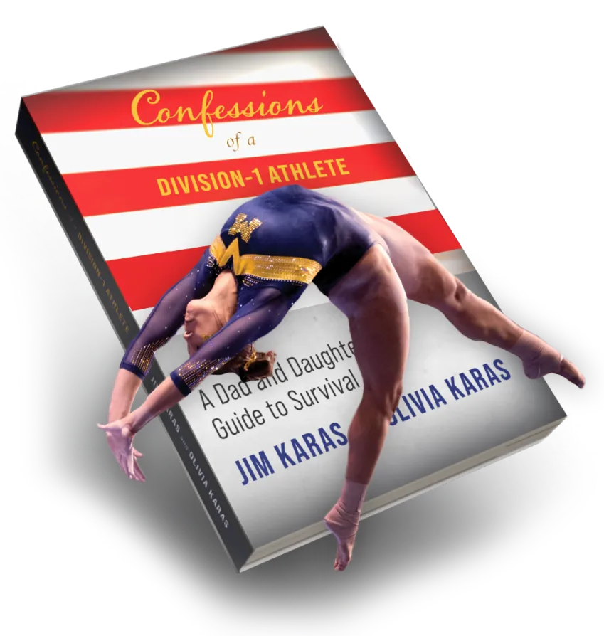

A Justiça em
Páginas de
Ouro.
Uma obra prima literária que descortina os bastidores da advocacia de alta performance, estratégias de governança patrimonial e o verdadeiro legado jurídico corporativo. Adquira sua cópia autografada na pré-venda.

"Uma leitura cirúrgica e indispensável para líderes do mercado corporativo."
Antigravity Review
Crítico EditorialTipografia & Escala
Família Primária (Sans)
Inter
Carregamento via Google Fonts CDN. Stack: Inter, sans-serif.
Família Secundária (Serif)
Instrument Serif
Carregamento via Google Fonts CDN. Stack: Instrument Serif, serif.
Estratégia de Fonte
CSS assíncrono com a diretiva display=swap para evitar renderizações bloqueadas (FOUT).
| Papel Tipográfico | Exemplo ao Vivo | Especificações Técnicas |
|---|---|---|
|
Heading 1 h1 / title-lg |
O Legado da Estratégia Jurídica. |
font-family: Instrument Serif (serif) font-size: 60px (md) / 40px (sm) / 32px (xs) font-weight: 400 | line-height: 1.05 letter-spacing: -0.025em | text-transform: none |
|
Heading 2 h2 / section-title |
Advocacia de Alta Performance e Negócios |
font-family: Instrument Serif (serif) font-size: 32px (md) / 24px (xs) font-weight: 400 | line-height: 1.20 letter-spacing: -0.02em | text-transform: none |
|
Heading 3 h3 / card-title |
Contratos & Governança Societária |
font-family: Instrument Serif (serif) font-size: 20px | font-weight: 500 line-height: 1.30 | letter-spacing: normal |
|
Body Large body-lg |
Estratégia patrimonial focada na preservação de valor e na blindagem de ativos para as próximas gerações. |
font-family: Inter (sans-serif) font-size: 16px (1rem) | font-weight: 300 line-height: 1.625 (relaxed) | text-color: white-ice/80 |
|
Body Regular body-md |
Holdings familiares e acordos de acionistas desenhados sob medida por especialistas renomados no cenário nacional. |
font-family: Inter (sans-serif) font-size: 14px (0.875rem) | font-weight: 300 line-height: 1.5 | text-color: white-ice/60 |
|
Caption & Label caption / uppercase |
ÁREAS DE ATUAÇÃO |
font-family: Inter (sans-serif) font-size: 10px | font-weight: 700 (bold) letter-spacing: 0.1em (widest) | text-transform: uppercase |
Sistema de Cores
Brand Dark (Fundo Principal)
rgb(14, 35, 71) | HSL(218, 67%, 17%)
A base do design system. Um azul marinho escuro e sofisticado que substitui os tons cinzas e pretos antigos, transmitindo seriedade técnica e profundidade.
Panel Dark (Superfície Sólida)
rgb(26, 53, 102) | HSL(219, 59%, 25%)
Cor sólida interna usada para painéis informativos e cartões do tipo Bento Grid, atuando como contraste principal ao fundo marinho escuro.
Destaque Dourado (Premium Highlight)
rgb(212, 180, 122) | HSL(39, 50%, 65%)
Cor clássica de destaque. Utilizada em badges, elementos de liderança técnica, timelines de vitória jurídica e contornos de conic spinner.
Accent Blue (Acento Primário)
rgb(46, 134, 232) | HSL(212, 80%, 55%)
Acento elétrico vibrante do projeto do livro e elementos dinâmicos. Define o início de gradientes e botões da marca.
Accent Light Blue (Variação de Acento)
rgb(111, 168, 245) | HSL(214, 87%, 70%)
A variação mais leve e luminosa do azul acentuado. Aplicada para criar transições degradês brilhantes e estados de focos e contornos ativos.
Branco Gelo (Neutral Light)
rgb(244, 246, 250) | HSL(220, 33%, 97%)
Cor clara para textos primários, subtítulos secundários leves e contornos reflexivos de bordas translúcidas de vidro.
Variantes de Opacidade Contextuais (Com Branco Gelo)
Componentes de Interface
Botões (Animations & Hover States)
Campos de Formulário (Focus States)
Cards & Bento Containers
Painel de Vidro Amplo (.glass-panel)
Base estrutural que utiliza gradientes sutis, desfoque de fundo e borda fina de 1px com 8% de opacidade sobre a cor do painel sólido #1A3566.
"A excelência jurídica é construída com obsessão cirúrgica por detalhes."
Dra. Fernanda
Autora do LivroJanelas Modais (Premium Modal)
Utiliza desfocagem ambiental ativa sobre o conteúdo de fundo em azul marinho #0E2347 e transições de escala.
Badges & Indicadores de Status
Dicas Flutuantes (Tooltips)
Posicionadas absolutamente acima do elemento ativador, surgindo suavemente com desvanecimento.
Iconografia do Sistema
Padrões de Escala de Ícones
Diretrizes de Traço & Cor
1. Utilizar Lucide com espessura padrão de traço igual a 2px para manter legibilidade técnica.
2. Os ícones herdam as cores das classes tipográficas do Tailwind (ex: text-brand-gold).
Movimento & Animações
Entrada Fluida (.reveal)
Suave subida com atenuação cúbica de 0.9s e desfoque inteligente. Perfeito para surgimento progressivo de seções durante o rolamento.
Cartão Revelador
transition: cubic-bezier(0.16, 1, 0.3, 1)
Galeria de Keyframes Nativos
.animate-float
Flutuação senoidal contínua (Y: ±10px). Usado nas capas de livros.
Conic Spinner [spin_4s]
Rotação cônica infinita de gradiente para preencher botões primários.
Dashed Double Spin [spin_10s / spin_15s]
Giro concêntrico nos dois sentidos. Metáfora de segurança jurídica.